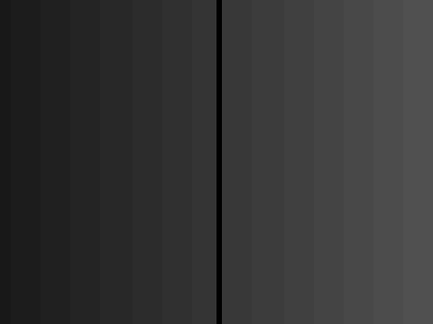
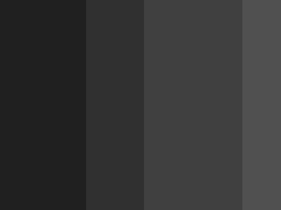
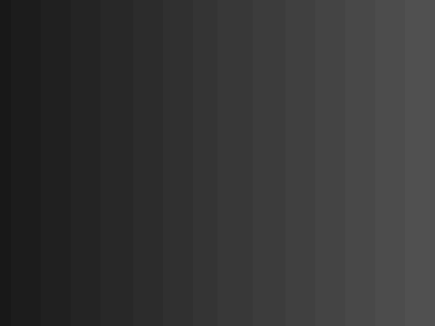

DeScratch quantised every sample of a >8-bit source
Outcome: built. DeScratch is 8-bit only. The pass converted a 10/12/16-bit clip to 8 bits, ran the plugin, and up-converted the whole 8-bit result back to the source format. The plugin changes about 1.5% of luma samples, but the output lost the low bits of all of them. That was 78% of luma and chroma samples at 10-bit and 99.6% at 16-bit (the rest happened to sit on an 8-bit level already). On a smooth gradient the picture came back in 8-bit bands.
The block now applies only the plugin's change at full depth:
clip = _expr([source, up(descratched8), up(source8)], "x y + z -")
Here up() is a zimg depth conversion back to the source format. Every sample the plugin left alone is
bit-exact. A repaired sample is the 8-bit repair plus the source's own sub-8-bit residual, within half an 8-bit level
of the 8-bit result. Scratch detection is unchanged because the plugin still sees the same 8-bit picture. 8-bit sources
skip the new code.
1. Fixtures
A 10-bit file converted from an 8-bit master has zero low bits, so the old code was already bit-exact on it. That is
why the existing 8-vs-10-bit parity test never caught this, and why my first probe on such a fixture showed no loss at
all. The repository has no genuine >8-bit footage either: pal-sd-25.mov's 10-bit samples are 99.99%
multiples of four. So both fixtures here have synthetic sub-8-bit content:
- capture: 12 frames of
Tests/TestResources/interlaced_test.avi(real 720x576 PAL interlaced). It is promoted to 16-bit with a smooth ripple of ±1.5 10-bit levels added to luma and chroma. - gradient: a shallow horizontal luma ramp across the frame, from 64 to 80 in 8-bit levels, with flat chroma. This is where 8-bit quantisation shows as bands.
Three dark scratches are drawn on each, multiplicatively, at x = 150 (2 px), 361 (1 px) and 560 (3 px). Each fixture is then converted to the format under test and flagged field-based TFF, as the templates mark an interlaced source. 4:2:0 runs its luma on the 4:2:2 carrier, as the templates do (task #29).
Trap: R78's _Range follows H.273, so 0 is limited and 1 is full. That is the opposite of the old
_ColorRange. My first table had its range columns swapped, which surfaced as low bits "lost" on the
"limited" rows. Full range scales by 1023/255, not 4.
2. What each version does
Three versions of the block are compared:
- current is the code before this task.
- delta is the fix.
- masked is the alternative. It takes the up-converted 8-bit result wherever the plugin changed a sample, and the source elsewhere.
The columns, all over 12 frames:
- non-exact is the share of samples that differ from the source.
- set = 8-bit run asks whether the samples that differ are exactly the ones the 8-bit run changed.
- max from repair is the largest distance from the up-converted 8-bit result, in 8-bit levels.
- scratch left is the mean |output − clean picture| over an 8-px strip around each scratch, in 8-bit levels. The 8-bit run's figure is measured against the clean picture rounded to 8 bits.
- low bits lost counts samples whose bits below the 8-bit level differ from the source's (limited range only).
| fixture | format | version | non-exact Y | non-exact U / V | set = 8-bit run | max from repair | scratch left | low bits lost |
|---|---|---|---|---|---|---|---|---|
| capture | 10-bit 4:2:2 | 8-bit run | 1.461% | 0 | – | – | 4.615 | – |
| current | 78.27% | 78.01% | no | 0 | 4.727 | 3 878 799 | ||
| delta (fix) | 1.461% | 0 | yes | 0.50 | 4.601 | 0 | ||
| masked | 1.461% | 0 | yes | 0.50 | 4.605 | 56 395 | ||
| capture | 10-bit 4:2:0 | current / delta / masked | 78.27 / 1.461 / 1.461% | 78.01 / 0 / 0% | no / yes / yes | 0 / 0.50 / 0.50 | 4.727 / 4.601 / 4.605 | 3 878 799 / 0 / 56 395 |
| capture | 12-bit 4:2:2 | current / delta / masked | 94.36 / 1.459 / 1.459% | 94.36 / 0 / 0% | no / yes / yes | 0 / 0.50 / 0.50 | 4.740 / 4.604 / 4.603 | 4 690 986 / 0 / 67 895 |
| capture | 16-bit 4:4:4 | current / delta / masked | 99.59 / 1.459 / 1.459% | 99.67 / 0 / 0% | no / yes / yes | 0 / 0.50 / 0.50 | 4.737 / 4.602 / 4.600 | 4 955 859 / 0 / 72 321 |
| capture | 10-bit 4:2:2 full range | current / delta / masked | 75.35 / 1.436 / 1.436% | 77.8 / 0 / 0% | no / yes / yes | 0 / 0.50 / 0.50 | 4.762 / 4.619 / 4.619 | n/a |
| gradient | 10-bit 4:2:2 | 8-bit run | 0.694% | 0 | – | – | 1.500 | – |
| current / delta / masked | 74.44 / 0.694 / 0.694% | 0 / 0 / 0 | no / yes / yes | 0 / 0.50 / 0.50 | 1.755 / 1.610 / 1.579 | 3 704 832 / 0 / 34 560 | ||
| gradient | 16-bit 4:4:4 | current / delta / masked | 99.44 / 0.694 / 0.694% | 0 / 0 / 0 | no / yes / yes | 0 / 0.50 / 0.50 | 1.765 / 1.596 / 1.584 | 4 948 992 / 0 / 34 560 |
The gradient's chroma is flat at 512, an 8-bit level, so the current code leaves it exact by coincidence. The gradient's 4:2:0, 12-bit and full-range rows are in the script output and show the same pattern. The 1-px scratch at x = 361 is too faint for the plugin at its default settings at any depth, so it stays in every version. That is the plugin, not this change.
Distinct luma values along one untouched row of the 10-bit gradient: source 68, current 18, delta 66, masked 66. The row crosses the repaired 2-px scratch, which accounts for the two values missing from delta and masked.
3. The pictures
  


10-bit gradient around the 2-px scratch at x = 150, frame 0, 160x120 at 3x, luma contrast-stretched 16x. Left: the scratched source. Centre: the current code; the scratch is gone but the ramp is in four 8-bit bands. Right: the fix; the scratch is gone and the ramp keeps its 10-bit steps.


|output − source| on the 10-bit capture around the same scratch, x64. Left: the current code changes the whole frame (the diagonal pattern is the ripple's low bits being rounded away). Right: the fix changes only the scratch.
Decisions
- Delta, not masked. Both change exactly the 8-bit run's samples and remove the same scratch, within
0.04 levels. The delta also keeps the source's low bits inside the repair, so a repaired column on a gradient doesn't
step. It also carries DeScratch's partial
keepblending without a separate mask. - Both up-conversions go through zimg, not
(y − z) × 2^(bits−8)inside the expression. The down-conversion is zimg's and depends on the range: full range scales by 1023/255. Converting back the same way keeps the delta right in both ranges (the full-range rows above). - The down-conversion is unchanged (plain rounding, no dither), so detection is identical to before.
- Expr clamps to the format's range, and the frame properties come from the source clip, so
_FieldBasedis kept.std.Exprandakarin.Exprboth accept mixed-depth inputs. The block itself only passes clips of one format.
Limits of these measurements
- The sub-8-bit content is synthetic: a ripple and a ramp, not a real 10-bit capture. The claims don't depend on what the low bits hold. Bit-exactness and low-bit preservation are exact integer statements.
- Detection is still done at 8 bits, so a scratch fainter than half an 8-bit level is invisible to the plugin either way. This change is about the samples the plugin doesn't touch.
- Measured on macOS arm64 only. The arithmetic is integer zimg and Expr, with no CPU-dispatched code of our own.
Tests
- Rust:
test_88keeps its guard strings and pins the delta.test_243asserts the delta in both scripts and that the whole-clip up-conversion is gone. - Flutter (heavy),
integration_high_bit_depth_filters_test.dart, group "DeScratch keeps >8-bit precision (task #34)". It runs on 10-bit 4:2:2 and 4:2:0 fixtures whose samples are four times the 8-bit scratched fixture's plus 0 or 1, so the plugin sees the same 8-bit picture in both runs. It asserts:- chroma is bit-exact;
- every sample the 8-bit run left alone is bit-exact;
- the changed set equals the 8-bit run's;
- every sample is within half an 8-bit level of 4 × the 8-bit output;
- the source's low bits survive everywhere;
- the preview matches the encode.
Follow-ups
The same whole-frame quantisation is in the other "convert down, run, convert back" guards. Bifrost and DeDot are 8-bit only, and Bifrost also dithers on the way back up. LUTDeCrawl and DeRainbow cap out at 10-bit, so they affect 12/16-bit sources. Filed as task #37.
Reproduce
SCRATCH=/some/scratch/dir DEPS=deps/macos-arm64 docs/reports/issue-34-descratch-high-bit-depth/scripts/reproduce.sh
reproduce.sh decodes the capture with the bundle's ffmpeg and runs precision.py, which
prints every table above and writes the images. common.py holds the fixtures and the three versions of
the block. It needs akarin, so it can't run on the macos-x64 bundle.